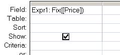

Return the integer portion of a number.
Syntax
Fix (expression)
Key
expression The numeric expression whose integer portion will be returned.
The Fix() function can be used in VBA or in an SQL query.
Negative numbers will be rounded up by Fix().

Example
Dim dblDemo as double
dblDemo = Fix(123.64) Will return 123
dblDemo = Fix(-32.45) Will return -32
“If you are planning for a year, sow rice; if you are planning for a decade, plant trees; if you are planning for a lifetime, educate people” ~ Chinese Proverb
Related:
Int - Return the integer portion of a number (negative numbers round down)